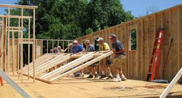

Based in Philadelphia, PA, with roots dating to 1832, Janney Montgomery Scott LLC is a full-service financial services firm, providing comprehensive financial advice and superior service to individual, corporate and institutional investors.
The professionals at Janney live and work in over 100 regions across the country - from large metropolitan areas to small towns. We are proud of the level of commitment and involvement our employees exhibit through numerous organizations and associations in their various communities.

About Habitat for Humanity Philadelphia
Habitat for Humanity Philadelphia is an independently chartered affiliate of Habitat for Humanity International (HFHI), the largest nonprofit homebuilder worldwide. Locally, our mission is to transform lives and our city by building and repairing homes in partnership with families in need, and uniting all Philadelphians around the cause of affordable housing. Our vision is a city where all Philadelphians live in safe, affordable homes. Globally, our vision is a world where everyone has a decent place to live. We believe that owning a safe, decent, affordable home is a critical factor in empowering families to build brighter futures for themselves. Families qualify for our homeownership and home repair programs by showing a need for safe, affordable housing, by meeting income criteria, and by being willing to contribute "Sweat Equity" work on Habitat's projects. Habitat Philadelphia has served over 500 families since its founding in 1985.